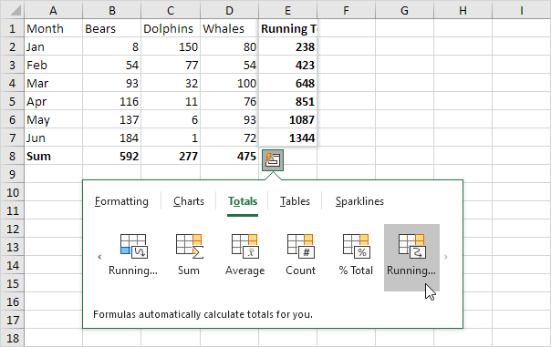
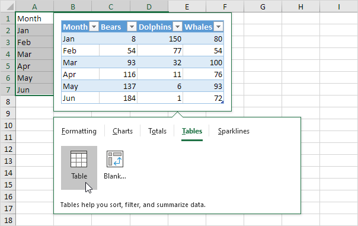
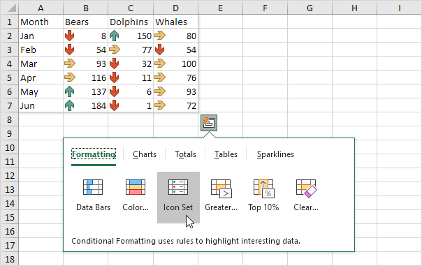
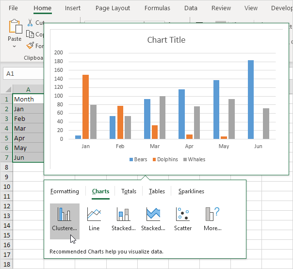
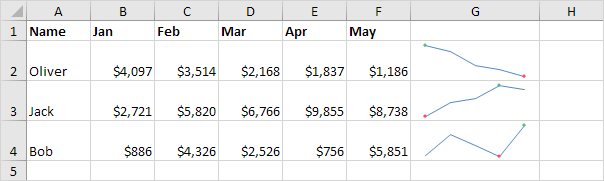

Quick Analysis
Totals | Tables | Formatting | Charts | Sparklines
Use the Quick Analysis tool in Excel to quickly analyze your data. Quickly calculate totals, quickly insert tables, quickly apply conditional formatting and more.
Totals
Instead of displaying a total row at the end of an Excel table, use the Quick Analysis tool to quickly calculate totals.
1. Select a range of cells and click the Quick Analysis button.
2. For example, click Totals and click Sum to sum the numbers in each column.
Result:
3. Select the range A1:D7 and add a column with a running total.

Note: total rows are colored blue and total columns are colored yellow-orange.
Tables
Use tables in Excel to sort, filter and summarize data. A pivot table in Excel allows you to extract the significance from a large, detailed data set.
1. Select a range of cells and click the Quick Analysis button.
2. To quickly insert a table, click Tables and click Table.

Note: visit our page about Tables to learn more about this topic.
3. Download the Excel file (right side of this page) and open the second sheet.
4. Click any single cell inside the data set.

5. Press CTRL + q. This shortcut selects the entire data set and opens the Quick Analysis tool.
6. To quickly insert a pivot table, click Tables and click one of the pivot table examples.
Note: pivot tables are one of Excel's most powerful features. Visit our page about Pivot Tables to learn more about this topic.
Formatting
Data bars, color scales and icon sets in Excel make it very easy to visualize values in a range of cells.
1. Select a range of cells and click the Quick Analysis button.
2. To quickly add data bars, click Data Bars.
Note: a longer bar represents a higher value. Visit our page about Data Bars to learn more about this topic.
3. To quickly add a color scale, click Color Scale.
Note: the shade of the color represents the value in the cell. Visit our page about Color Scales to learn more about this topic.
4. To quickly add an icon set, click Icon Set.

Note: each icon represents a range of values. Visit our page about Icon Sets to learn more about this topic.
5. To quickly highlight cells that are greater than a value, click Greater Than.
6. Enter the value 100 and select a formatting style.

7. Click OK.
Result. Excel highlights the cells that are greater than 100.
Note: visit our page about Conditional Formatting to learn much more about this topic.
Charts
You can use the Quick Analysis tool to quickly create a chart. The Recommended Charts feature analyzes your data and suggests useful charts.
1. Select a range of cells and click the Quick Analysis button.
2. For example, click Charts and click Clustered Column to create a clustered column chart.

Note: click More to view more recommended charts. Visit our Guide about Charts to learn more about this topic.
Sparklines
Sparklines in Excel are graphs that fit in one cell. Sparklines are great for displaying trends.
1. Download the Excel file (right side of this page) and open the third sheet.
2. Select the range A1:F4 and click the Quick Analysis button.

3. For example, click Sparklines and click Line to insert sparklines.

Customized result:

Note: visit our page about Sparklines to learn how to customize sparklines.